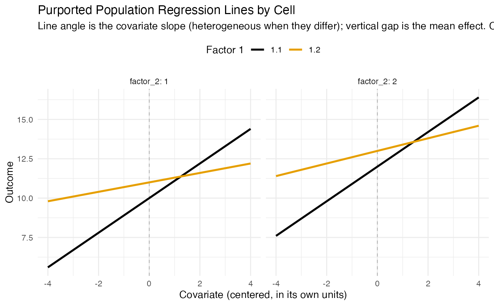

Composite Power for a Factorial ANCOVA With Heterogeneous Slopes
Source:R/ss_power_composite_factorial_ancova_het.R
ss_power_composite_factorial_ancova_het.RdDetermine the necessary per-cell sample size, or the realized composite power
at a supplied per-cell size, for a balanced factorial analysis of covariance
in which the covariate's slope may differ across the cells. When the slopes
differ, the covariate main effect (the average slope) and the
factor-by-covariate slope heterogeneity are themselves testable effects, and
any of them, together with the factorial mean effects, can make up the
composite. This is the factorial generalization of
ss_power_composite_ancova_2group, whose two-group model with a
correlation per group is the one-factor, two-level case here.
Usage
ss_power_composite_factorial_ancova_het(
factor_levels,
effects,
means = NULL,
correlations = NULL,
sigma = NULL,
sd_cov = 1,
desired_power = 0.85,
alpha_level = 0.05,
n_per_cell = NULL
)
# S3 method for class 'dmar_composite_power_factorial_het'
plot(x, ...)Arguments
- factor_levels
Integer vector of the number of levels of each factor (each at least 2).
- effects
A non-empty list naming the effects in the composite. Each element has a
type, one of"mean"(a factorial main effect or interaction on the cell means; the default),"covariate"(the average covariate slope), or"slope"(a factor-by-covariate slope heterogeneity). A"mean"or"slope"effect also givesfactors, the factor indices it spans; a"covariate"effect spans none. Each element carries its effect size,forpartial_eta_squared, unless the population values (meansandcorrelations) are supplied, in which case the sizes come from them. An optionallabelnames the effect; defaults are the factor indices joined byxfor a mean effect,"covariate", and"cov_x_<factors>"for a slope effect.- means
Optional array of population cell means (dimensions
factor_levels), needed when a"mean"effect is in the composite. Supplies the mean effects' sizes.- correlations
Optional array of the population covariate-outcome correlation within each cell (dimensions
factor_levels, each in \((-1, 1)\)). The cell slopes it implies supply the covariate and slope effects' sizes, and its spread across cells sets the slope heterogeneity. Required with the population-values interface, since the pooled error depends on every cell's correlation.- sigma
The common within-cell population standard deviation of the outcome (before adjustment), required with the population-values interface.
- sd_cov
Population standard deviation of the covariate. Default 1. A correlation is scale free, so
sd_covdoes not change any power; it sets the units the slopes and the figure are drawn in.- desired_power
Desired composite statistical power (default 0.85). Used only when
n_per_cellisNULL.- alpha_level
Type I error rate for each individual test (default 0.05).
- n_per_cell
Per-cell sample size (balanced); if supplied, the realized composite power is returned rather than a sample size planned.
- x
An object returned by
ss_power_composite_factorial_ancova_het.- ...
Further arguments to the figure:
palette,title, and, for the regression-line figure,cov_range(covariate range in SDs either side of the mean, default 2).
Value
A data.frame with term and value columns: the
recommended (or supplied) n_per_cell and total N, the
composite_power, the residual_df, then for each effect its
marginal power_<label>, purported f_<label>, numerator
df_<label>, and noncentral_parm_<label>, followed by
cells and alpha_level. Carries the dmar_ss_power class
for tidy / glance and a
dmar_composite_power_factorial_het class for plot().
When the supplied cell correlations differ in absolute value the powers are
approximations and the row names say so, with an approximate_ prefix
on every power and on a planned sample size; see the section on unequal
residual variances. An approximate attribute carries the same flag
for a program to test without parsing row names, and
tidy and glance read both
sets of names, so a relabeled table still summarizes to its per-cell size
and its composite power.
Details
Kept separate from ss_power_composite_factorial_ancova, which
assumes one common slope and treats the covariate only as a variance reducer.
Use this function when the covariate slope is expected to differ across
conditions, or when the test of that difference is part of the design.
The model fits the factorial mean structure, the covariate, and every
factor-by-covariate slope term, so it has \(2 \times \mathrm{cells}\)
parameters and residual degrees of freedom \(N - 2\,\mathrm{cells}\). Under
balance and a covariate with a common distribution across the cells, those
terms are mutually orthogonal, so the tests share only the pooled residual
and the composite is the shared-error integral of
ss_power_composite_factorial_ancova. A "mean" effect on factor
set \(S\) has numerator df \(\prod(a - 1)\) and is read from the cell
means against the pooled adjusted error \(\sigma^2(1 - \bar{\rho^2})\); a
"covariate" effect is the grand slope on 1 df; a "slope" effect on \(S\) is
the slope heterogeneity across those factors, with the same df as the matching
mean effect, read from the cell slopes.
The two approximations are those of
ss_power_composite_ancova_2group. The covariate-related tests
condition on the covariate cross-products, overstating power by an amount of
order \(1 / N\), which is negligible past a few dozen per cell. Separately,
correlations that differ in absolute value across cells make the pooled error
a mixture of scaled chi squares rather than the single one the integral
assumes; that one does not shrink with N and is the subject of the
section below.
Functions
plot(dmar_composite_power_factorial_het): Draw the purported population values: the per-cell regression lines when population values were supplied, or the effect size lollipop otherwise.
Unequal Residual Variances When the Cell Correlations Differ
In cell c the residual variance is \(\tau_c^2 = \sigma^2 (1 - \rho_c^2)\), so cell correlations that differ in absolute value leave the cells with different residual variances. Averaging the squared correlations, which is what \(\sigma^2(1 - \bar{\rho^2})\) does, gets the expected pooled error right and its distribution wrong: the residual sum of squares is \(\sum_c \tau_c^2 Q_c\) with the \(Q_c\) independent chi square variables, a mixture of scaled chi squares with the same mean and a larger spread than the single scaled chi square the shared-error integral integrates over. The numerators are affected too. The covariate effect is the average cell slope and a slope effect is a contrast among the cell slopes, and cell slopes estimated with different residual variances give estimators of those two that are correlated, so the tests are not independent even given the error estimate.
Every power the function reports is then an approximation, and the output
says so. composite_power is reported as
approximate_composite_power, each power_<label> as
approximate_power_<label>, and a planned sample size as
approximate_n_per_cell and approximate_N, because that size is
the smallest one at which the approximation reaches desired_power
rather than a size known to attain it. The numbers do not change; the names
do, and only in this case. Equal absolute cell correlations, including cells
whose correlations share a magnitude and differ in sign, are the exact case
and keep the ordinary names.
The error has no guaranteed sign, and it grows with the spread of the cell correlations rather than shrinking with N. Treat the number as an approximation and confirm a design you intend to run by simulating it: draw each cell's errors with its own residual standard deviation \(\sigma \sqrt{1 - \rho_c^2}\), fit the same model, and count the replications in which every effect in the composite is significant. The two-group help page reports the size of the departure over a range of correlation gaps.
The effect size interface is a special case worth naming. Supplying f
or partial_eta_squared for each effect states the effects directly and
says nothing about the cell correlations, so the function has nothing to
detect unequal residual variances from and labels the table exact. If the
design those effect sizes came from has cell correlations that differ in
absolute value, the same approximation applies and the labels will not tell
you; supply correlations instead when you want the function to keep
track of it.
The figure
When the population values are supplied, plot() draws the population
regression line in each cell over the covariate, so heterogeneous slopes show
as lines of different angle and mean effects as vertical separation, colored
by the first factor and faceted by any others. When effect sizes are supplied
instead, it draws the effect size lollipop of
ss_power_composite_factorial_ancova. Either way the composite
power is in the subtitle. Requires ggplot2.
References
Maxwell, S. E., Delaney, H. D., & Kelley, K. (2027). Designing experiments and analyzing data: A model comparison perspective (4th ed.). Routledge. (See Chapter 9 on the analysis of covariance and heterogeneity of regression, and Chapter 7 on factorial designs.)
See also
ss_power_composite_factorial_ancova for the common-slope
version; ss_power_composite_ancova_2group for the two-group case
Other sample size for power:
power_fisher_exact(),
ss_aipe_mixed_effects(),
ss_aipe_tost_smd(),
ss_power_R2(),
ss_power_R2_sensitivity(),
ss_power_c(),
ss_power_c_ancova(),
ss_power_composite_ancova(),
ss_power_composite_ancova_2group(),
ss_power_composite_anova(),
ss_power_composite_factorial_ancova(),
ss_power_composite_factorial_anova(),
ss_power_composite_sem(),
ss_power_contrast(),
ss_power_equivalence_c(),
ss_power_factorial_ancova(),
ss_power_factorial_anova(),
ss_power_indirect_effect(),
ss_power_mixed_effects(),
ss_power_one_way_anova(),
ss_power_pcm(),
ss_power_r(),
ss_power_rc(),
ss_power_reg_coef(),
ss_power_reg_coef_sensitivity(),
ss_power_rm_anova(),
ss_power_sc(),
ss_power_sem(),
ss_power_smd(),
ss_power_split_plot_anova()
Other composite power:
ss_power_composite_ancova(),
ss_power_composite_ancova_2group(),
ss_power_composite_anova(),
ss_power_composite_factorial_ancova(),
ss_power_composite_factorial_anova(),
ss_power_composite_sem()
Author
Ken Kelley kkelley@nd.edu
Examples
# A 2 by 2 design whose conclusion needs a main effect and evidence that the
# covariate slope differs across the first factor. Effect sizes stated
# directly: the main effect (mean), the average covariate effect, and the
# factor 1 by covariate slope heterogeneity.
ss_power_composite_factorial_ancova_het(
factor_levels = c(2, 2),
effects = list(list(type = "mean", factors = 1, f = 0.25),
list(type = "covariate", f = 0.40),
list(type = "slope", factors = 1, f = 0.20)),
desired_power = 0.80)
#> term value
#> necessary_n_per_cell 55
#> necessary_N 220
#> composite_power 0.805
#> residual_df 212
#> power_1 0.958
#> power_covariate 1
#> power_cov_x_1 0.84
#> f_1 0.25
#> f_covariate 0.4
#> f_cov_x_1 0.2
#> df_1 1
#> df_covariate 1
#> df_cov_x_1 1
#> noncentral_parm_1 13.8
#> noncentral_parm_covariate 35.2
#> noncentral_parm_cov_x_1 8.8
#> cells 4
#> alpha_level 0.05
#> desired_power 0.8
# The same design from population values: cell means, a covariate-outcome
# correlation per cell (they differ across factor 1, so the slopes do), and a
# common within-cell SD. plot() then draws the per-cell regression lines.
cell_means <- matrix(c(10, 12,
11, 13), nrow = 2, byrow = TRUE)
cell_rho <- matrix(c(0.55, 0.55,
0.15, 0.20), nrow = 2, byrow = TRUE)
fit <- ss_power_composite_factorial_ancova_het(
factor_levels = c(2, 2), means = cell_means, correlations = cell_rho,
sigma = 4, sd_cov = 2,
effects = list(list(type = "mean", factors = 1),
list(type = "covariate"),
list(type = "slope", factors = 1)),
n_per_cell = 40)
#> Warning: The cell correlations differ in absolute value, so the cells' residual variances differ and the shared-error composite power is an approximation whose error grows with the spread of the correlations. The powers are reported as approximate_* rows, and a planned sample size as approximate_n_per_cell, because neither is exact; confirm a final design by simulation.
fit
#> term value
#> specified_n_per_cell 40
#> specified_N 160
#> approximate_composite_power 0.299
#> residual_df 152
#> approximate_power_1 0.406
#> approximate_power_covariate 0.999
#> approximate_power_cov_x_1 0.733
#> f_1 0.137
#> f_covariate 0.397
#> f_cov_x_1 0.205
#> df_1 1
#> df_covariate 1
#> df_cov_x_1 1
#> noncentral_parm_1 3
#> noncentral_parm_covariate 25.2
#> noncentral_parm_cov_x_1 6.75
#> cells 4
#> alpha_level 0.05
plot(fit)

# The one-factor, two-level case is the two-group composite ANCOVA.
ss_power_composite_factorial_ancova_het(
factor_levels = 2,
means = c(-0.25, 0.25), correlations = c(0.1, 0.5), sigma = 1,
effects = list(list(type = "mean", factors = 1),
list(type = "slope", factors = 1)),
n_per_cell = 100)
#> Warning: The cell correlations differ in absolute value, so the cells' residual variances differ and the shared-error composite power is an approximation whose error grows with the spread of the correlations. The powers are reported as approximate_* rows, and a planned sample size as approximate_n_per_cell, because neither is exact; confirm a final design by simulation.
#> term value
#> specified_n_per_cell 100
#> specified_N 200
#> approximate_composite_power 0.825
#> residual_df 196
#> approximate_power_1 0.965
#> approximate_power_cov_x_1 0.855
#> f_1 0.268
#> f_cov_x_1 0.214
#> df_1 1
#> df_cov_x_1 1
#> noncentral_parm_1 14.4
#> noncentral_parm_cov_x_1 9.2
#> cells 2
#> alpha_level 0.05